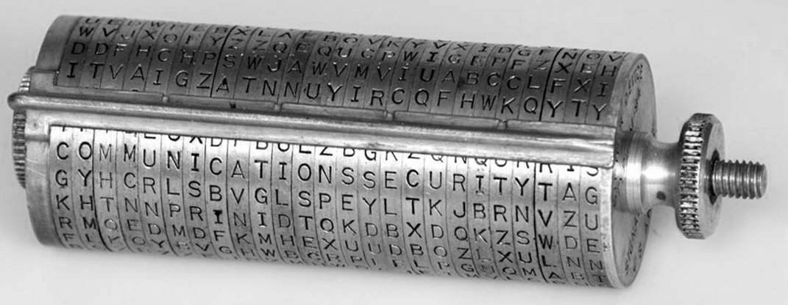
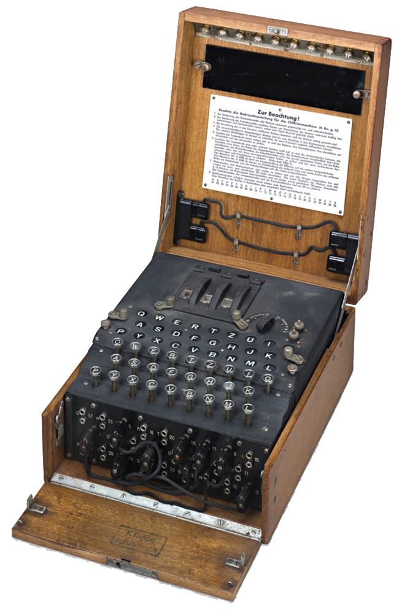
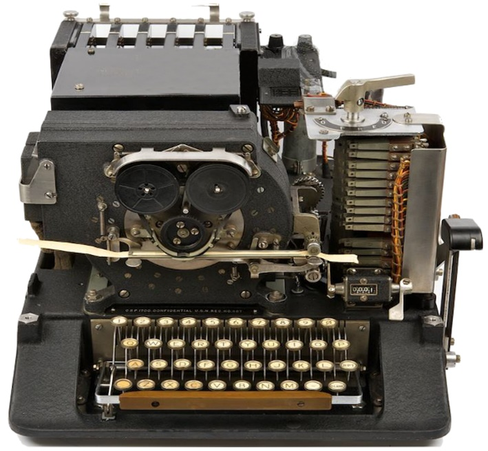

1.2.5. Первые механические и электромеханические шифрмашины и методы из криптоанализа
1.2.5. Первые механические и электромеханические шифрмашины и методы из криптоанализа
С античных времен и до наших дней объемы зашифрованных сообщений непрерывно увеличивались, что в условиях ручного шифрования требовало все больших затрат квалифицированных людских ресурсов. Криптографов всегда не хватало, чтобы удовлетворить потребности правительств, армии, дипломатии. Естественным выходом из данной ситуации были попытки создать устройства, облегчавшие шифрование, которыми мог воспользоваться даже человек, несведущий в криптографии.
К первым механическим устройствам шифрования относится дисковая шифрмашина, изобретенная в США первым госсекретарем Томасом Джефферсоном, впоследствии ставшим президентом (рис. 1.11).

Рис. 1.11. Цифровое шифрующее колесо Томаса Джефферсона
Это устройство (шифрмашина Джефферсона) состояло из 25−36 деревянных дисков одного диаметра, насаженных на общую ось. Все диски вращались на оси относительно друг друга и на каждый был нанесен алфавит, перемешанный одним из способов − таблица замены. Сообщение шифровалось блоками по количеству дисков на этой машине. На машине имелась прямоугольная рейка, позволявшая выделить строку букв на дисках, параллельную оси. Шифрование выполнялось так. Под рейкой формировалось сообщение путем вращения соответствующих дисков, на первом находилась первая буква, на втором − вторая и т. д. Положение дисков фиксировалось гайкой, исключая их взаимное вращение. После этого рейка перемещалась в произвольное положение и показывала буквы шифртекста. На приемной стороне аналогично составлялась строка из букв шифртекста и вращением рейки вокруг всего цилиндра определялась позиция, в которой получался осмысленный текст. Такая шифрсистема имела огромное количество ключевых элементов и соответственно состояний, таких как расположение букв на дисках, расположение дисков на оси, выбор набора дисков из имеющегося запаса. Это изобретение не было оценено по достоинству современниками и не использовалось на практике, только спустя почти 100 лет в армии США стали применять практически аналогичное шифрмашине Джефферсона.
Несмотря на появление механических шифраторов, проблема скоростного шифрования так и не была решена. Шифрование и расшифрование все еще выполнялось вручную и занимало длительное время. Серьезный прорыв в этом вопросе начался после того, как появилась возможность использовать электричество в устройствах шифрования. Первые электромеханические шифрмашины стали появляться в начале ХХ века.
Наиболее известным устройством электромеханического шифрования является «Энигма» − шифрмашина, применяемая в ходе второй мировой войны немецкой армией (рис. 1.12). Она относится к классу дисковых машин и являлась электромеханическим устройством для организации шифрованного обмена сообщениями.

Рис. 1.12. Армейский вариант шифрмашины "Энигма"
Каждый из 10 дисков этой машины был случайным шифром простой замены, и результат преобразования можно было изменять с помощью коммутационной панели, реализующей попарную перестановку символов. Начальное положение роторов играло роль ключа шифрования и изменялось в соответствии с датой передачи сообщения по специальному ключевому блокноту. Эта машина осуществляла многоалфавитную подстановку и допускала использование различных состояний. В процессе эксплуатации «Энигма» многократно модифицировалась, т. е. фактически это устройство реализует семейство алгоритмов шифрования. Если первые модели имели всего три барабана, то более поздние модели уже содержали по 6 барабанов. Несмотря на то, что ряд таких устройств были взломаны, наиболее стойкие модели взломать так и не удалось.
 Программный эмулятор шифровальной машины "Энигма"
Программный эмулятор шифровальной машины "Энигма"
С «Энигмой» связано также появление первой в истории вычислительной машины, сконструированной в 1942 году для перебора ключевых элементов группой специалистов-криптографов под руководством известного математика Алана Тьюринга. Собственно, с ее помощью британские криптоаналитики и сумели взломать и почитать многие телеграммы, зашифрованные этим устройством. Вскрытие британцами армейского варианта «Энигмы» оказало большое влияние на ход второй мировой войны, в частности помогла англичанам уничтожить лучший линкор Германии «Бисмарк», раскрывать маршруты патрулирования подводных лодок и уничтожать их.
Похожие машины применялись и другими государствами, например, в США в 1930-е годы была разработана роторная электромеханическая шифрмашина "Марк-2" (рис. 1.13) и использовалась в армии и ВВС. Она так и не была взломана, ее интересной особенностью являлось то, что она позволяла печатать принимаемое сообщение на ленте, тогда как «Энигма» только отображала его в виде лампочек. Печатающее устройство для «Энигмы» можно было приобрести дополнительно.

Рис. 1.13. Шифрмашина " МАРК-2"
Похожие устройства были разработаны и в СССР. Одно из них называлось М-101 «Изумруд», в нем использовалось сложение текста с полностью случайной последовательностью, записанной на рулоне специальной ленты. Это было одно из самых стойких устройств своего времени, его алгоритмической основой являлся абсолютно стойкий шифр Вернама. Было ясно, что уникальная система машинного шифрования русских может быть уязвима только при наличии самой шифртехники и ключей к ней. Войсковым шифровальщикам доводилось работать в исключительных условиях – под огнем, в окопах, стогах, блиндажах, ночью при керосиновых лампах или свечах. В соответствии с инструкцией Генерального штаба они обеспечивались усиленной охраной. Случалось и так, что вместо охраны шифровальщик ставил перед собой канистру с бензином, укладывал рядом гранаты и вынимал из кобуры пистолет. Приказ Гитлера по вермахту от августа 1942 года гласил: «Кто возьмет в плен русского шифровальщика, либо захватит русскую шифровальную технику, будет награжден Железным крестом, отпуском на родину и обеспечен работой в Берлине, а после окончания войны – поместьем в Крыму».